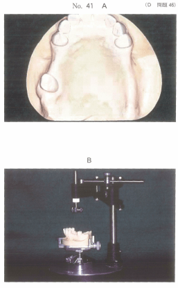
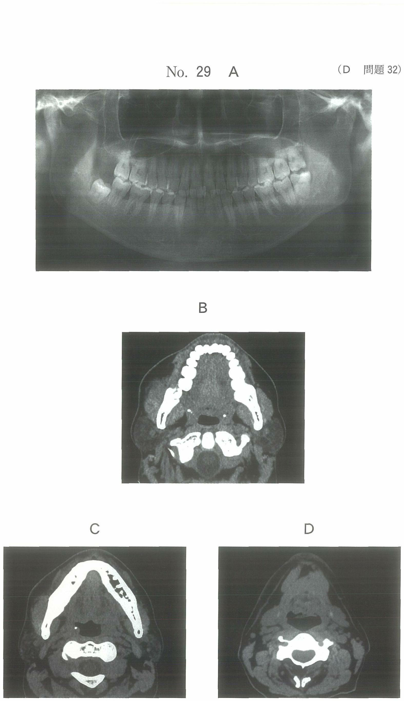
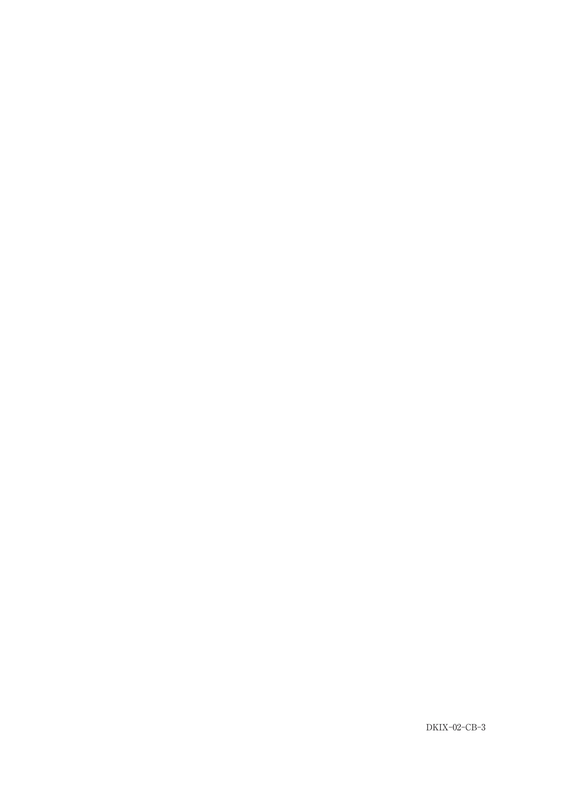
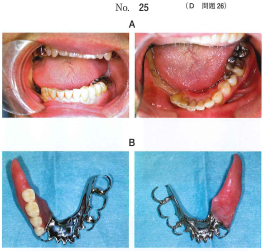

パーシャルデンチャーの設計は、正確な検査と診断に基づき歯科医師自身により行われる。設計には基本設計（予備設計）と製作設計（本設計）の2つがある。
| 順序 | 項目 | 内容 |
|---|---|---|
| 1 | 残存歯による支持 | レストの設計 |
| 2 | 顎堤による支持 | 義歯床の設計 |
| 3 | 連結装置 | 大連結子・小連結子の選択 |
| 4 | 支台装置維持部 | クラスプの設計 |
咬合圧の分散が最も重要。遊離端義歯では咬合圧が支台歯と顎堤に分散されるため、適切な設計により過度な負担を防ぐ。
サベイヤーとは、模型上で残存歯と顎堤の最大豊隆部や複数の残存歯の平行関係を調べ、義歯の設計に必要なサベイライン（最大豊隆線）を描記し、義歯の着脱方向を検討するための装置。
| 部位 | 構成 |
|---|---|
| 本体 | 円筒（スピンドル）、円筒固定ねじ、付属品固定ねじ、基底面、支柱 |
| 模型台 | 傾斜板、傾斜板固定ねじ、模型固定ねじ |
| 付属品 | 用途 |
|---|---|
| 測定杆（アナライジングロッド） | 着脱方向の決定、アンダーカットの目測 |
| アンダーカットゲージ | 鉤尖位置の決定（0.25, 0.50, 0.75mm） |
| 炭素棒（カーボンマーカー） | サベイラインの描記 |
| 蝋形成用へら（ワックストリマー） | ブロックアウト |
| 補強鞘 | 炭素棒の破折防止 |
| テーパーツール | ブロックアウト（2度と6度） |
測定杆 → アンダーカットゲージ → 炭素棒 → 蝋形成用へら
注意：義歯床の記入や大連結子の選択はサベイライン描記前に行う設計段階の作業
ブロックアウトとは、残存歯や顎堤に生じる不必要なアンダーカットを石膏やワックスを用いて埋没すること。義歯の着脱を妨げるアンダーカットを解消し、義歯の円滑な着脱を可能にする。
リジッドサポートとは、義歯の支持を主に支台歯のレストに求める設計概念。咬合力を残存歯に伝達することで、義歯床下粘膜への負担を軽減する。
注意：被圧変位量が大きい場合や支台歯の負担能力が低い場合は、粘膜負担を併用する設計が必要
注意：維持の最大化は着脱困難の原因となり不適切
60歳の女性。上顎部分床義歯を製作中である。作業用模型の写真（別冊No.41A）、器具の写真（別冊No.41B）及び器具の付属品の写真（別冊No.41C）を別に示す。
付属品の使用順序で正しいのはどれか。1つ選べ。


【解説】サベイヤー付属品の使用順序は、ア（測定杆）で着脱方向決定→イ（アンダーカットゲージ）で鉤尖位置決定→ウ（炭素棒）でサベイライン描記→エ（蝋形成用へら）でブロックアウト。
部分床義歯製作過程の写真（別冊No.3A、B）を別に示す。
写真Aから写真Bへの過程で行ったのはどれか。1つ選べ。

【解説】写真Aから写真Bでは歯冠部の形態（カントゥア）が修正されている。サベイドクラウンにより適切な外形線を付与し、クラスプの維持・把持に適した形態としている。
部分床義歯を用いた補綴治療を行う際にリジッドサポートの概念を適用できるのはどれか。1つ選べ。
【解説】リジッドサポートは支台歯に咬合力を負担させる設計。支台歯が対角線的に配置されていると、義歯の回転軸が長くなり安定する。被圧変位量が大きい（d）場合は粘膜負担が必要でリジッドサポート不適。
60歳の男性。下顎右側臼歯部の腫瘍に対し下顎辺縁切除術を施行し、皮弁を用いて再建した後、同部の補綴治療を行うこととした。補綴治療後の口腔内写真（別冊No.25A）と製作した義歯の写真（別冊No.25B）を別に示す。
大連結子を臼歯舌側歯面に接触させることで期待できるのはどれか。2つ選べ。

【解説】大連結子を歯面に接触させることで、連結子が歯列の形態に沿い舌感が向上する。また、歯面との接触により義歯の動揺が抑制される。維持力の向上は支台装置（クラスプ）の機能。
研究用模型にサベイラインを描記した。
引き続きサベイヤー上で行う必要があるのはどれか。2つ選べ。
【解説】サベイライン描記後は、アンダーカットゲージで鉤尖位置を決定し、ブロックアウトを行う。義歯床の記入や大連結子の選択は設計段階で行う。ワックスステップは蝋義歯製作時の操作。
遊離端義歯の設計で、最も優先すべきなのはどれか。1つ選べ。
【解説】遊離端義歯では支台歯と顎堤粘膜の被圧変位量の差が問題となる。咬合圧を適切に分散させることで、支台歯への過度な負担や顎堤の吸収を防ぐことが最も重要。
上肢に片麻痺のある要介護高齢者に対する部分床義歯の設計において考慮すべきなのはどれか。2つ選べ。
【解説】片麻痺患者では片手での操作が必要。リムーバルノブは把持しやすく着脱を容易にする。オーバーデンチャーは残存歯根を支台とし、単純な着脱動作で使用可能。維持の最大化は着脱を困難にするため不適切。